تصنيف البلازارات بالتعلّم العميق استنادًا إلى بيانات توزيع الطاقة الطيفية متعددة الترددات
الملخص
تُعدّ البلازارات من أكثر المصادر دراسةً في الفيزياء الفلكية عالية الطاقة، إذ تشكّل أكبر نسبة من مصادر أشعة غاما خارج المجرية وتُعدّ مرشحات رئيسية لأن تكون نظراء للنيوترينوهات الفيزيائية الفلكية عالية الطاقة. ويمثل تحديدها بصورة موثوقة وسط العدد الكبير من المصادر الراديوية الخافتة خطوة حاسمة لربط النظراء في علم الفلك متعدد الرسل. ومع استعداد المجتمع الفلكي لقدوم عدد من المرافق الجديدة القادرة على مسح السماء غير الحرارية بأعماق غير مسبوقة، من الراديو إلى أشعة غاما، تزداد أهمية تقنيات التعلّم الآلي من أجل تحديد المصادر بسرعة وموثوقية. كان هدف هذا العمل تطوير بنية للتعلّم العميق قادرة على تحديد البلازار ضمن مجموعة من النوى المجرية النشطة (AGN) بالاعتماد حصرًا على معلومات غير متزامنة لتوزيع الطاقة الطيفية، جُمعت من فهارس عامة متعددة الترددات. تستخدم هذه الدراسة كمية غير مسبوقة من البيانات، مع توزيعات طاقة طيفية لـ مصدرًا جُمعت باستخدام أداة Open Universe VOU-Blazars. وتستخدم شبكة عصبية تلافيفية ذات ذاكرة طويلة قصيرة الأمد، بُنيت خصيصًا لمسألة تصنيف توزيعات الطاقة الطيفية، ونصفها بالتفصيل ونتحقق من صلاحيتها. وقد استطاعت الشبكة تمييز البلازارات من الأنواع الأخرى من النوى المجرية النشطة بدرجة مُرضية (محققةً مساحة تحت منحنى ROC مقدارها )، حتى عندما دُرِّبت على مجموعة فرعية مختزلة من العينة الكاملة. ولا تحاول هذه الدراسة الأولية تصنيف البلازارات بين أصنافها الفرعية المختلفة، أو تكميم احتمال أي ارتباط متعدد الترددات أو متعدد الرسل، لكنها تُقدَّم خطوةً نحو هذه التطبيقات ذات التوجه العملي الأكبر.
keywords:
المجرات: نشطة – أجسام BL Lacertae: عام – المناهج: تحليل البيانات – قواعد البيانات الفلكية: متنوعة – أدوات المرصد الافتراضي1 مقدمة
تشكّل البلازارات، وهي صنف فرعي صغير راديويّ السطوع من النوى المجرية النشطة (AGN)، المجموعة المهيمنة من المصادر خارج المجرية في سماء أشعة غاما. تضم البلازارات 3,413 من أصل 5,787 مصدرًا في فهرس Fermi Large Area Telescope الرابع (4FGL) (Abdollahi et al., 2020; Ballet et al., 2020)، وتشكل 98% من المصادر خارج المجرية في الفهرس الثالث لمصادر Fermi-LAT الصلبة (3FHL) (Ajello et al., 2017)، الذي يجمع المصادر المكتشفة فوق 10 GeV. كما تمثل الغالبية العظمى (73 من أصل 8411 1 http://tevcat2.uchicago.edu/) من المصادر خارج المجرية فائقة الطاقة (VHE) المعروفة حاليًا، التي اكتشفتها أجهزة أشعة غاما الأرضية، ومن المتوقع أن تكون النوع المهيمن من المصادر التي ستكتشفها مصفوفة تلسكوبات تشيرينكوف المستقبلية عند خطوط العرض المجرية العالية. (Cherenkov Telescope Array Consortium et al., 2019). تُصدر البلازارات إشعاعًا متغيرًا غير حراري عبر كامل الطيف الكهرومغناطيسي، ويتكوّن توزيع طاقتها الطيفية (SED) – وهو رسم لتدفق الطاقة مقابل التردد – من حدبتين عريضتين تُنسبان، عند الطاقات المنخفضة، إلى إشعاع السنخروترون، وعند الطاقات الأعلى، إلى انبعاث كومبتون العكسي (Fossati et al., 1998; Padovani et al., 2017). ويرجع انتشارها العددي في الفهارس عالية الطاقة إلى خصائص الانبعاث المتطرفة لهذه المصادر، إذ يهيمن عليها إشعاع مُحزَّم نسبيًا من نفاثة مصطفة على نحو وثيق مع خط بصر الراصد.
مُيِّزت البلازارات في الأصل عن النوى المجرية النشطة الأخرى بناءً على تغيريتها السريعة أو غياب (وأحيانًا ضعف) خطوط الانبعاث في أطيافها البصرية. وتنقسم هذه المجموعة إلى BL Lacs وكوازارات راديوية ذات طيف مسطح (FSRQs) تبعًا لقوة خطوط الانبعاث الضيقة لديها (Tadhunter, 2008)، كما تُصنَّف أيضًا وفق خصائص توزيع الطاقة الطيفية عريض النطاق، وبخاصة تردد ذروة انبعاث السنخروترون (Padovani and Giommi, 1995; Abdo et al., 2010)، من مصادر تبلغ ذروتها عند طاقات منخفضة (راديوية) إلى مصادر تبلغ ذروتها عند طاقات عالية (أشعة سينية) (Giommi et al., 1995).
في الآونة الأخيرة، حُدِّد البلازار الباعث لأشعة غاما TXS 0506+056 بوصفه النظير الفيزيائي الفلكي المحتمل لحدث انبعاث نيوترينو بطاقة TeV (IceCube Collaboration et al., 2018)، ومنذ ذلك الحين تزايدت الإشارة إلى البلازارات بوصفها المصادر المحتملة للمجموعة المتنامية من نيوترينوهات IceCube فائقة الطاقة (مثلًا، Murase et al., 2018; Padovani et al., 2018; Giommi et al., 2020c)، مما يضعها مباشرة في صميم الفيزياء الفلكية متعددة الرسل الناشئة.
وبما أنها مهيمنة عدديًا في الفهارس عالية الطاقة، فإن تصنيفها عند تحديدها على أساس أرصاد أشعة غاما يمثل تحديًا خاصًا، ولا يزال نحو ربع المصادر في فهرس 4FGL بلا نظراء مؤكَّدين بإحكام عند أطوال موجية أخرى. ويعود ذلك إلى ضعف دقة تحديد موضع المصدر (حتى عدة دقائق قوسية في حالة Fermi-LAT)، الأمر الذي ينتج عشرات النظراء المحتملين ويجعل الارتباط ملتبسًا. ومع ذلك، فإن إنشاء تعريفات راسخة متعددة الأطوال الموجية أمر أساسي، نظرًا إلى أهمية البيانات عالية الطاقة في فهم ظاهرة البلازار ودراسات ضوء الخلفية خارج المجرية (Sol et al., 2013).
تقليديًا، تُجرى الارتباطات متعددة الأطوال الموجية غالبًا على أساس الفصل الزاوي بين النظراء المرشحين من نطاقات مختلفة (Ajello et al., 2020). وبالمثل، يُجرى تصنيف المصادر عادةً يدويًا عبر المطابقة التقاطعية لهذه المعلومات متعددة الأطوال الموجية (مثلًا، D’Abrusco et al., 2013a; Arsioli and Polenta, 2018). وقد ظهرت حديثًا أعمال كثيرة تحاول معالجة مشكلة تصنيف المصادر وربطها من خلال تطبيق خوارزميات التعلّم الآلي.
تتبع غالبية هذه الأعمال استراتيجية تصنيف قائمة على بيانات أشعة غاما وحدها، وتهدف إما إلى تحديد النوى المجرية النشطة ضمن عينة مصادر Fermi-LAT غير المعرّفة (مثلًا، Xiao et al. (2020) و Hassan et al. (2013)) أو إلى التمييز بين BL Lacs وFSRQs ضمن مجموعة مرشحي البلازارات ذات النوع غير المؤكد (BCU)، على سبيل المثال في أحدث 4FGL (Kovačević et al. (2019) و Kang et al. (2019)). وقد وسّع بعض المؤلفين نهج التعلّم الآلي إلى المسألة المباشرة للارتباطات متعددة الأطوال الموجية، آخذين في الاعتبار خصائص معينة للنظراء المرشحين مثل الألوان والمعلومات الطيفية للوصول إلى نتائج ذات دوافع فيزيائية أقوى (مثلًا، de Menezes et al. (2020) و Kaur et al. (2019))، مما يبيّن أهمية نهج تحديد المصادر عبر النطاقات الذي يتضمن بيانات طيفية عريضة النطاق.
الهدف الرئيسي من هذا العمل هو تحديد البلازارات اعتمادًا على معلومات متعددة الأطوال الموجية غير متزامنة، باستخدام أداة قائمة على التعلّم العميق. وعلى وجه الخصوص، وبدلًا من التركيز على تقديم ارتباطات جديدة للمصادر، نرغب في تقييم الموثوقية العامة لتصنيف البلازارات القائم على التعلّم الآلي ضمن قاعدة بيانات غير متجانسة متعددة الأطوال الموجية للنوى المجرية النشطة. ويختلف عملنا عن المقاربات متعددة النطاقات مثل عمل de Menezes et al. (2020) في أننا نستخدم معلومات توزيع الطاقة الطيفية الكاملة وغير المتجانسة للتصنيف، بدلًا من نهج قائم على بعض المعلمات المنتقاة مسبقًا لوصف المجموعة. كما يبتكر مقارنةً باقتراح حديث قدّمه Arsioli and Dedin (2020)، من حيث إننا نستخدم خوارزمية تعلّم عميق مصممة خصيصًا بدلًا من أدوات تعلّم آلي أعمّ.
صممنا شبكة عصبية تلافيفية ذات ذاكرة طويلة قصيرة الأمد للمسألة المحددة المتمثلة في تمييز البلازارات من قاعدة بيانات عامة للنوى المجرية النشطة، اعتمادًا على معلومات توزيع الطاقة الطيفية الكاملة الخاصة بها. ونطبّق حدًا أدنى من المعالجة المسبقة أو لا نطبقها على بيانات الدخل، لأننا نستهدف خوارزمية مرنة قابلة للتطبيق المباشر على مجموعات بيانات عامة. وقد أظهر هذا النوع من النماذج أداءً عاليًا في عدد من مسائل تصنيف السلاسل والانحدار، وهو قابل للتكيّف بدرجة كبيرة. وبما أن النموذج يُعرَّف بطريقة مدفوعة بالبيانات اعتمادًا على بيانات حقيقية، فإنه لا يتطلب نمذجة مسبقة قد تؤدي إلى أخطاء منهجية، وإن كان لا يزال عرضةً لأخطاء منهجية وتحيزات محتملة مرتبطة باكتساب البيانات.
مجموعة البيانات المستخدمة في هذا العمل هي الأوسع حتى الآن بين الجهود المشابهة القائمة على فهارس بلازارات ونوى مجرية نشطة عامة جُمعت سابقًا، وقد أتاح جمع البيانات استخدام أداة Open Universe VOU-blazars (Chang et al., 2020)، التي تسترجع البيانات باستخدام بروتوكولات المرصد الافتراضي (VO) من أكثر من 65 فهرسًا ومسحًا وقاعدة بيانات طيفية متعددة الأطوال الموجية موزعة عالميًا، وتعالجها إلى تدفقات متجانسة ومصححة من امتصاص المجرة، ثم تبني توزيع الطاقة الطيفية.
تُظهر نتائجنا أن الشبكة العصبية استطاعت فصل البلازارات عن النوى المجرية النشطة الأخرى بنجاح وبدرجة مُرضية. وقد أُجري إجراء تحقق متقاطع، وتُظهر مقاييس عينة اختبار عمياء تباينًا ضئيلًا بين الطيّات.
تُقسَّم الورقة على النحو الآتي: يعرض القسم 2 مجموعة البيانات المستخدمة في الدراسة؛ ويصف القسمان 3 و 4 بالتفصيل خوارزمية التعلّم العميق المصممة خصيصًا والمطوَّرة هنا، وكذلك تدريب الشبكة العصبية؛ ويعرض القسم 5 نتائج التصنيف بالتعلّم العميق؛ ويناقش القسم 6 النتائج فيزيائيًا وقابليتها العامة للتطبيق؛ وأخيرًا، يلخص القسم 7 المناقشة ويعرض بعض الآفاق المستقبلية.
2 مجموعة بيانات التصنيف
يمثل اختيار العينة وتعريفها خطوة أساسية في تطبيقات التعلّم الآلي. وفي سعينا إلى تطوير أفضل خوارزمية تعلّم ممكنة قادرة على تحديد توزيع الطاقة الطيفية للبلازارات وتصنيفه تصنيفًا صحيحًا من بين مجموعة أعمّ من المجرات النشطة، سعينا إلى بناء أكبر مجموعة من توزيعات الطاقة الطيفية الغنية بالبيانات. ولهذا الغرض، استخدمنا القائمة الرئيسية للبلازارات التي جمعها برنامج Open Universe for blazars، والتي تضم أكثر من 6,000 جسم. وقد بُنيت هذه القائمة بدمج ROMA-BZCAT (Massaro et al., 2015)، الذي يضم 3,561 بلازارًا مؤكَّدًا طيفيًا من جميع الأنواع، وفهرس 3HSP، الذي يتضمن 2,013 بلازارًا من نوع HSP (Chang et al., 2019)، وقائمة البلازارات المكتشفة حديثًا في فهرس Fermi 4FGL-DR2 (Abdollahi et al., 2020; Ballet et al., 2020). أما عينة النوى المجرية النشطة غير البلازارية فاختيرت من فهرس الكوازارات المليوني V6.4 (milliquas Flesch, 2015)، مع قبول المصادر التي ترد أيضًا في عدة فهارس متعددة الترددات ولا ترد في قائمة Open Universe الرئيسية للبلازارات، وهي تحتوي في معظمها على كوازارات لامعة ومجرات سيفرت، بإجمالي 8,467 مصدرًا. ومن ثم تتألف العينة الكاملة من 14,555 جسمًا.
إن جمع بيانات عريضة النطاق ومتعددة الترددات لهذا العدد الكبير من المصادر مهمة معروفة بصعوبتها. ولإنجاز هذه المهمة، استخدمنا VOU-Blazars (Chang et al., 2020)، وهي أداة قائمة على VO طُورت في سياق مبادرة الأمم المتحدة للكون المفتوح (UNOUI؛ انظر مثلًا Giommi et al. (2019)) ومتاحة عبر بوابة Open Universe التي تتولى وكالة الفضاء الإيطالية (ASI) صيانتها حاليًا22 2 www.openuniverse.asi.it. وتهدف الأداة إلى تيسير اكتشاف البيانات وتجميعها على نطاق واسع بالبحث وجمع كل المعلومات الطيفية المتاحة على الإنترنت، في قواعد بيانات مفتوحة الوصول ومتوافقة مع VO، لمصدر معيّن – وليس للبلازارات فقط، رغم الاسم. ويشمل جمع البيانات أيضًا المعلومات المتاحة من مركز بيانات علوم الفضاء التابع لـ ASI (SSDC) ومنتجات Open Universe، والأخيرة متاحة كلها بصيغة VO.
أُجري اختيار البيانات لبناء توزيعات الطاقة الطيفية باستخدام VOU-Blazars عبر بحث مخروطي بنصف قطر 15 ثانية قوسية انطلاقًا من المواضع المرجعية للمصادر في العينة أعلاه. وحصلنا في النهاية على 6,045 توزيع طاقة طيفية لبلازارات و 7,962 توزيعًا لمصادر غير بلازارية، بمجموع إجمالي قدره 14,007 جسمًا في قاعدة بياناتنا النهائية. أما الأجسام المتبقية من عيّنتنا الأساسية فلم تكن لها نقاط بيانات متاحة للاسترجاع عبر أداة VOU-Blazar. وهذا يعني أن مجموعة البيانات النهائية تضم أكمل عينة توزيعات طاقة طيفية قائمة على VO ومتاحة علنًا على الإنترنت (وربما تكاد تكون شاملة). ولم يُجرَ أي انتقاء إضافي للمصادر بغرض جعل العينة أكثر تجانسًا. ونعدّ هذا التغاير جانبًا مهمًا من مجموعة بياناتنا، لأننا نهدف إلى خوارزمية تصنيف شاملة قدر الإمكان.
على الرغم من أن بعض توزيعات الطاقة الطيفية لدينا مكتملة جدًا، وفيها عدد كبير من نقاط البيانات عبر كامل المجال الطيفي (إذ تمتلك الأجسام الأكثر دراسةً آلاف النقاط الرصدية عبر الطيف الكهرومغناطيسي، وتمتد على مجال واسع من مستويات التدفق)، فإن بعض المصادر لا تتوافر لها إلا قياسات قليلة جدًا وغير متزامنة. وتتكون غالبية توزيعات الطاقة الطيفية المجمعة من بضع مئات من نقاط البيانات، كما يبين الشكل 1. ويُعدّ الصمود في تصنيف توزيعات الطاقة الطيفية حتى في مثل هذه الظروف "الشحيحة البيانات" هدفًا آخر لخوارزميتنا، وسنحلل لاحقًا في الورقة هذا الصمود بالتفصيل عند الانتقال إلى حالات قليلة العيّنة، وكذلك تأثير وجود قياسات غير متزامنة في تصنيف توزيع الطاقة الطيفية.
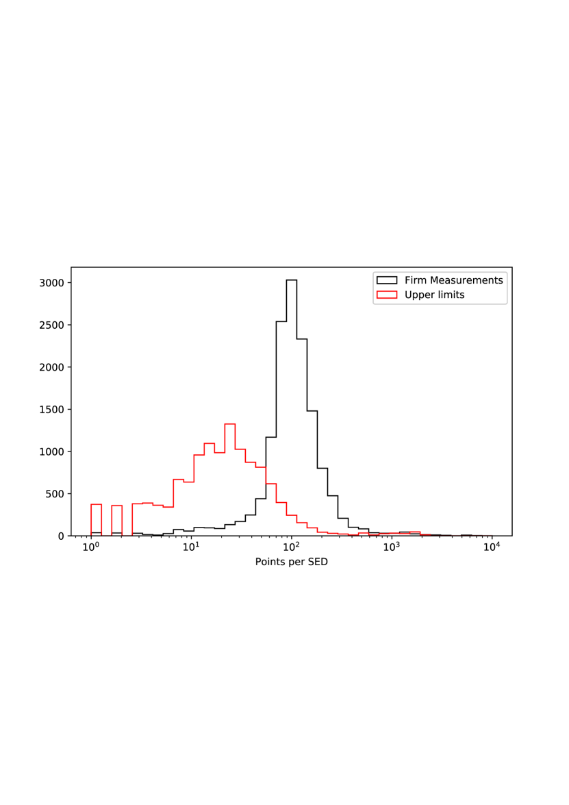
يجمع الشكل 2 كل بيانات توزيع الطاقة الطيفية لعينتي البلازارات وغير البلازارات المستخدمتين في تحليلنا. ولإعطاء فكرة عن كمية البيانات المتاحة عمومًا في كل نطاق طيفي، يُشار إلى عدد النقاط بسلم لوني. ولا تُعرض في الشكل إلا قياسات التدفق، في حين وُسِمت الحدود العليا للتدفق، كلما وُجدت، واستُبعدت من تحليل التصنيف. وكما يُرى، فإن المجال من دون المليمتر إلى قريب الأشعة تحت الحمراء هو المجال الطيفي الأفضل عينةً، إذ تمتلك جميع توزيعات الطاقة الطيفية تقريبًا بعض التغطية في هذه النطاقات. وفي حين أن تغطية أشعة غاما غير منتظمة إلى حد كبير بين الفئتين، لا يكاد يوجد أي فرق في التغطية الطيفية بين البلازارات وغير البلازارات باتجاه الطاقات المنخفضة.
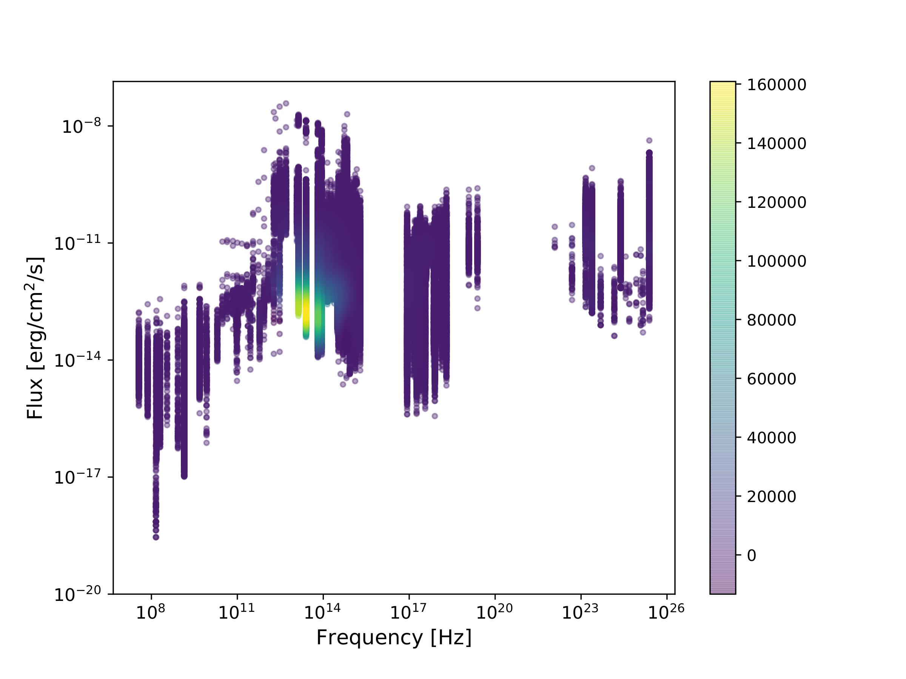
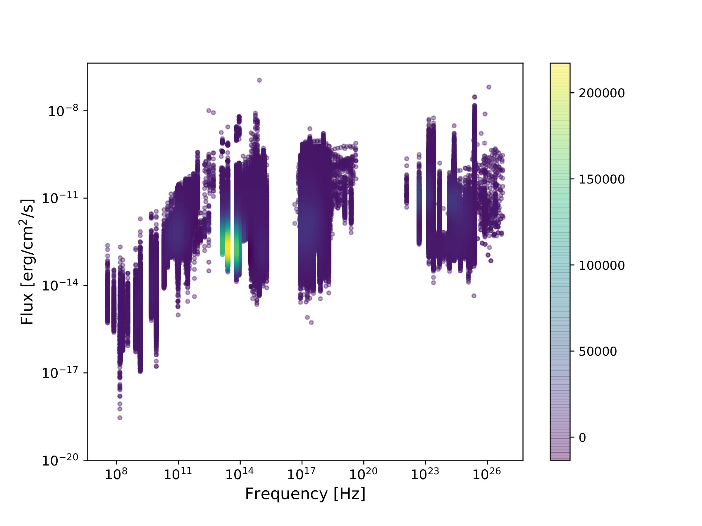
يمكن ملاحظة بعض الفروق المنهجية بصريًا بين توزيعات الطاقة الطيفية لمجموعتي المصادر، وهذا هو العنصر الرئيس الذي نريد أن تلتقطه شبكتنا العصبية على أساس كل مصدر على حدة. كما يُلاحظ بسهولة الفرق في التغطية الطيفية عند أعلى الطاقات بين مجموعتي المصادر، إذ تكون البلازارات أفضل عينةً بكثير في أشعة من المصادر غير البلازارية، كما هو متوقع. وبالإجمال، تجمع مجموعة بياناتنا أكثر من 1,900,000 قياس تدفق ونحو 600,000 حدًا أعلى تقريبًا.
يوفر الشكل 3 تشخيصًا مكمّلًا لمجموعة البيانات، إذ يبين اكتمال أخذ عينات توزيع الطاقة الطيفية لكل حاوية ترددية، أي نسبة المصادر التي لها رصد مؤكد واحد على الأقل عند تردد ما إلى الإجمالي، بعد أخذ المتوسط على جميع الترددات في حاوية معينة. وتُظهر حاوية الأشعة تحت الحمراء (IR) فرقًا بسيطًا بين البلازارات وغير البلازارات، وكذلك حاويتا البصري/فوق البنفسجي (UV) والأشعة السينية. ومن ناحية أخرى، فإن اكتمال البلازارات في الراديو، سواء عند التردد المنخفض (LF) أو التردد العالي (HF)، أكبر بكثير من اكتمال غير البلازارات؛ فالأولى راديوية السطوع، في حين توجد كمية معتبرة من النوى المجرية النشطة الراديوية الهدوء بين الثانية. والغالبية العظمى من المصادر في مجموعة البيانات هذه المرصودة في منطقة أشعة هي بلازارات، كما هو متوقع من الخصائص المتطرفة لهذه الأجسام المذكورة في القسم 1.
| Bin Name | Frequency Range (Hz) |
|---|---|
| Radio LF | |
| Radio HF | |
| IR | |
| Optical+UV | |
| X-rays | |
| -rays |
يجعل تغاير مجموعة البيانات التعامل معها تحديًا لطرائق التصنيف المؤتمتة، وهي اختبار جيد لخوارزميات التعلّم العميق في معالجة مجموعة بيانات من هذا النوع.
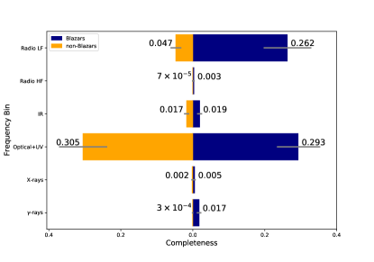
3 التصنيف بالتعلّم العميق
تمثل الشبكات العصبية العميقة (ويشار إليها فيما يأتي بـ DNNs؛ Goodfellow et al., 2016; LeCun et al., 2015) حالة خاصة من الشبكات العصبية الاصطناعية، وهي مفيدة بصورة مميزة في كثير من البيانات البنيوية مثل الصور والسلاسل الزمنية. والبنية الأساسية لأي شبكة عصبية هي تمثيل رياضي لعصبون ، يتكون من تركيب خطي للمدخلات يرتبط عادةً بدالة تحويل (تسمى دالة تنشيط):
| (1) |
حيث إن هي الأوزان و هو الانحياز، وهي المعلمات التي ينبغي تحسينها في DNN لمجموعة بيانات معينة. وتُرتَّب العصبونات في طبقات تحدد كيفية اتصال مجموعتين من العصبونات. لذلك يمكن أن تكون المدخلات إما بيانات الدخل الأولية وإما البيانات التي عالجتها بالفعل طبقة العصبونات السابقة.
الشبكات العصبية التلافيفية (CNNs) هي طبقات خاصة مستوحاة من مهام التعرف على الأنماط التي طُورت في أدمغة الثدييات (Hubel and Wiesel, 1962; LeCun et al., 2015). وتتكون من نوى تُلافَى مع البيانات أثناء تدفقها عبر DNN. وبالنسبة إلى نواة معطاة ومصفوفة ، يمكن تعريف عملية الالتفاف على النحو الآتي:
| (2) |
يحتوي النموذج العميق عادةً على عدة طبقات مكدسة ذات وظائف مختلفة، مثل اختزال الأبعاد (MaxPooling)، ودوال تنشيط العصبونات، وطبقات العصبونات كاملة الاتصال (أو الكثيفة).
برزت النماذج القائمة على DNN وCNN بوصفها أحدث ما توصلت إليه التقنية في عدة مهام من الرؤية الحاسوبية، مثل تصنيف الصور (انظر، مثلًا، Russakovsky et al., 2015; Zhang et al., 2018; Lin et al., 2018; John et al., 2015; Peralta et al., 2018)، والاستدلال اللغوي الطبيعي(Zhang et al., 2019) وتقدير الوضعيات، إلى جانب تطبيقات في طيف من المجالات متعددة التخصصات، مثل الطب (Shi et al., 2020; Norgeot et al., 2019) وتوصيف مكامن النفط والغاز (Dias et al., 2020; Valentín et al., 2018; Valentin et al., 2019). وقد ذُكر أن أداءها في مهام التصنيف يتجاوز أداء البشر في بعض مجموعات البيانات (Metcalf et al., 2018). وأثبتت الشبكات العصبية التقليدية وDNNs فعالية كبيرة في استخراج الأنماط الداخلية للبيانات في مهام التصنيف الفيزيائي الفلكي. ومن أمثلة ذلك التصنيف المورفولوجي للمجرات (Dieleman et al., 2015)، وتحديد أنظمة العدسات الجاذبية القوية (Bom et al., 2017; Metcalf et al., 2018; Lanusse et al., 2018)، وفصل النجوم عن المجرات (Kim and Brunner, 2016). وقد امتد هذا حديثًا أيضًا إلى النمذجة العكسية للأنظمة الفيزيائية الفلكية مثل العدسات الجاذبية القوية (Bom et al., 2019; Hezaveh et al., 2017; Pearson et al., 2019; Levasseur et al., 2017; Morningstar et al., 2018).
3.1 وحدات الذاكرة الطويلة القصيرة الأمد
ترتبط كثير من مهام التعرف على الأنماط في مشكلات الرؤية الحاسوبية بتصنيف السلاسل أو السلاسل الزمنية. ولمعالجة هذه المهمة، ينبغي تطوير DNN قادرة على تحليل البيانات المتسلسلة، مثل السلاسل الزمنية أو ترجمة اللغة أو تصنيف المنحنيات، حيث تُظهر نقاط البيانات ارتباطًا قويًا بجيرانها. ومن هذه النماذج شبكة عصبية متكررة (RNNs؛ انظر، مثلًا، Schuster and Paliwal, 1997; Medsker and Jain, 1999; Pascanu et al., 2013)، وتُعدّ الشبكات العصبية ذات وحدات الذاكرة الطويلة القصيرة الأمد (LSTMs) من أشهر أنواع RNN. وتناسب هذه التقنيات معالجة المعلومات المتسلسلة عبر سلسلة من التكرارات على مجموعة البيانات. لذلك يُستخدم هذا النوع من النهج على نطاق واسع في معالجة النصوص والصوت (انظر، مثلًا، Sutskever et al., 2011; Graves et al., 2013). كما طُبقت LSTMs بنجاح على مشكلات البيانات الفلكية، مثل التصنيف الطيفي للمستعرات العظمى وتصنيف منحنيات الضوء (Muthukrishna et al., 2019; Pasquet et al., 2019). والفكرة الرئيسية وراء LSTMs هي تعريف بنية شبكة عصبية تستطيع الاحتفاظ بالمعلومات ذات الصلة من النقاط السابقة مع إزالة البيانات غير الضرورية بفعالية. وتنجز هذه العمليات البوابات المسماة بوابات التذكر والنسيان، على الترتيب. وهي أوزان قابلة للتعلّم متصلة بدوال تنشيط مختلفة قادرة على موازنة المعلومات التي ينبغي الاحتفاظ بها أو إزالتها على نحو صحيح. غير أن هناك حالات يمكن أن تكون فيها المعلومات ذات الصلة موجودة في النقاط السابقة أو النقاط اللاحقة معًا. وهذا هو الحال عندما نهتم بالشكل العام للمنحنى. ولمعالجة هذا النوع من البيانات، يكون الاختيار الشائع هو LSTM ثنائية الاتجاه (Schuster and Paliwal, 1997)، بحيث تعمل وحدتا LSTM معًا عند كل نقطة في مجموعة البيانات، وتحللان البيانات في كلا الاتجاهين. يبيّن الشكل 4 تمثيلًا مبسطًا لكيفية عمل LSTM ثنائية الاتجاه: عند كل نقطة، يُنشأ الخرج ( في الشكل 4) بدمج LSTM تحمل معلومات من النقاط اللاحقة (الطبقة الخلفية) مع أخرى تحمل معلومات من النقاط السابقة (الطبقة الأمامية).
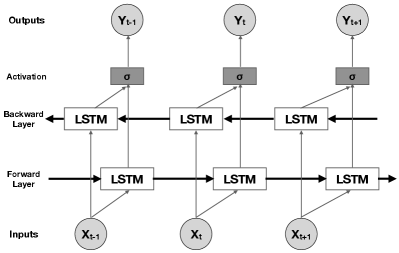
3.2 بنية النموذج
إحدى السمات المعرِّفة لتوزيع الطاقة الطيفية للبلازار هي شكله ذو الحدبتين. وبما أن أي توزيع طاقة طيفية يتكون من أزواج مرتبة، يمكننا النظر إلى توزيع الطاقة الطيفية للبلازار بوصفه تسلسلًا مرتبًا تتأثر فيه كل نقطة بالنقاط التي تسبقها (طاقة أدنى) وتلك التي تليها (طاقة أعلى)، بحيث يُحافَظ على الشكل العام حتى إذا تغير تردد القمم وسعتها. لذلك يتمثل مسار طبيعي لبنيتنا في استخدام شبكة متكررة ثنائية الاتجاه من أجل حفظ المعلومات من "المستقبل" (الطاقات الأعلى) و"الماضي" (الطاقات الأدنى). وبهذه الطريقة، ستستخدم الشبكة المعلومات القادمة من الترددات الأعلى والأدنى عند كل نقطة لتحديد الشكل العام لتوزيع الطاقة الطيفية.
بُني نموذجنا باستخدام Keras33 3 https://keras.io مع واجهة خلفية TensorFlow44 4 https://www.tensorflow.org في Python، وتُعرض بنيته في الشكل 5. صُممت الكتل الأربع الأولى، المؤلفة من طبقة تلافيفية 1D ذات حجم نواة 3، تتبعها دالة تنشيط tanh وطبقة Max Pooling 1D بحجم 2، لاختزال الأبعاد والتقاط السمات ذات الصلة في توزيع الطاقة الطيفية. وتملك الطبقات التلافيفية عددًا متزايدًا من المرشحات في كل كتلة بحيث تستطيع الشبكة سبر مقاييس أدق فأدق عبر توليد مزيد من متجهات السمات. وبعد ذلك، يُغذّى الخرج إلى طبقة LSTM ثنائية الاتجاه قبل أن نطابق الخرج مع المتغير المتنبأ به عبر سلسلة من الطبقات كاملة الاتصال. وتمتلك الشبكة إجمالي 16 طبقة وما يزيد قليلًا على تسعة ملايين معلمة. والخرج النهائي عدد يقابل احتمال أن يكون توزيع طاقة طيفية معيّن لبلازار.
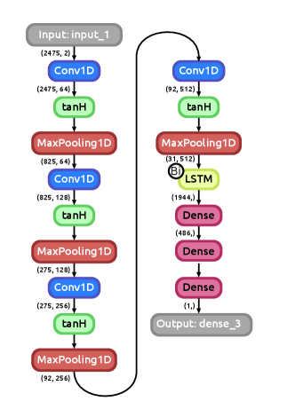
4 تدريب نموذج التعلّم العميق
تألف دخل خوارزمية التعلّم الآلي من متجه لقياسات التدفق ووسم للحدود العليا لكل مصدر في العينة. وقد رُتبت البيانات بحسب التردد لإعادة إنتاج التسلسل الطبيعي لتوزيع الطاقة الطيفية. وبما أن أخذ العينات الترددية كان مختلفًا لكل مصدر، وُسمت البيانات المفقودة عدديًا للحفاظ على الحجم الثابت نفسه لمتجهات دخل التدفق. وبالإجمال، قُسِّم توزيع الطاقة الطيفية إلى 2745 نقطة ترددية، وهي نفسها لكل متجهات الدخل.
كلما توافرت عدة قياسات تدفق لتردد معيّن، اختيرت قيمة واحدة فقط كدخل إلى الشبكة العصبية. وقد اخترنا هنا أن ننتقي منهجيًا أعلى نقاط التدفق. واتُّخذ هذا الاختيار بهدف تخفيف مزيج محتمل من حالات المصدر (الهادئة والمتوهجة) يُرجَّح وجوده في عينة القياسات غير المتزامنة. كما أن اختيار أعلى التدفقات يبرز طبيعيًا البصمات الطيفية للنفاثة، وهي المكوّن الأكثر نشاطًا وهيمنة في توزيع الطاقة الطيفية للبلازارات. وتميل مصادر الانبعاث الحراري الأخرى التي قد تكون موجودة، مثل المجرة المضيفة أو قرص التنامي، إلى أن تطغى عليها النفاثة خلال الحالات النشطة، مما يُظهر الشكل مزدوج الحدبة لتوزيع الطاقة الطيفية. وقد أدى هذا الانتقاء للبيانات إلى أفضل معدل نجاح في التصنيف، مقارنة بعدم انتقاء التدفق، إذ بدا أن تغيرية التدفق أو التفاوت الأكبر في عدد نقاط التدفق بين توزيعات الطاقة الطيفية الجيدة والضعيفة العينة يربك الشبكة. ومع ذلك، فإن اختيار متوسط مستوى التدفق أو حتى الحد الأدنى منه لا يؤثر إلا قليلًا أو لا يؤثر في النتائج النهائية، لأن مجال التدفق في الغالبية العظمى من المصادر ليس كبيرًا بدرجة ملحوظة. وتكون المقاييس (انظر القسم 5) متوافقة ضمن انحراف معياري واحد مع نهجنا الأصلي، باستخدام إجراء التحقق المتقاطع نفسه الموصوف أدناه. ومن ثم لا تُعد خطوة انتقاء البيانات هذه حاسمة لتطبيق الخوارزمية. وعلاوة على ذلك، ولتقييم ما إذا كانت أخطاء التدفق قد تؤثر في النتيجة النهائية، دربنا النموذج باستبدال كل نقطة تدفق بمتغير عشوائي مأخوذ من توزيع غاوسي، متوسطه يساوي قيمة التدفق وانحرافه المعياري يساوي خطأ التدفق. وكانت المقاييس متوافقة مع نتائجنا ضمن انحراف معياري واحد، مما يبيّن أن عدم تضمين الأخطاء لا يؤثر في النتائج النهائية.
أخيرًا، نظرًا إلى الندرة النسبية لبيانات أشعة والاختلاف غير المتجانس جدًا في التغطية بين البلازارات وغير البلازارات في هذا النطاق (انظر الشكلين 2 و 3)، شُغِّلت خوارزمية التصنيف على مجموعتين مختلفتين: العينة الكاملة باستخدام معلومات توزيع الطاقة الطيفية بأكملها، وعينة مختزلة تستبعد كل الترددات في منطقة أشعة (). وقد خفّض ذلك عدد الترددات الداخلة إلى الشبكة إلى 2391، وكلها ضمن منطقة السنخروترون من الطيف. وأُعيد قياس جميع التدفقات لتقع في المجال قبل تغذيتها إلى الشبكة العصبية.
تتمثل خطوة حاسمة قبل تغذية البيانات إلى الشبكة في تقسيم العينة إلى مجموعات فرعية للتدريب والتحقق والاختبار. وتُستخدم العينات الفرعية للتدريب في خوارزمية الانتشار العكسي لتحديث الأوزان والانحيازات الداخلية لكل طبقة من النموذج بغية تقليل دالة الخسارة. وتُستخدم مجموعة التحقق بعد كل خطوة تدريب لتقييم أداء الشبكة ومنع فرط المواءمة. وأخيرًا، لا تُستخدم مجموعة الاختبار إلا بعد انتهاء التدريب لإنتاج نتائج التصنيف. ولا تستخدم الشبكة مجموعتي التحقق أو الاختبار لتحديث أوزانها، وبما أن بيانات الاختبار لا تُستخدم إلا بعد اكتمال التدريب، يمكننا أن نكوّن فكرة عن كيفية تعميم النموذج على بيانات لم يرها من قبل.
طريقة شائعة لمحاولة تجنب التحيزات الناتجة من استخدام جزء صغير من البيانات للاختبار هي تطبيق التحقق المتقاطع: تُقسَّم البيانات إلى مجموعات فرعية مختلفة، حيث تُستخدم للتدريب والتحقق، وتُستخدم واحدة للاختبار. وبتكرار الإجراء مرات مع استخدام مجموعة فرعية مختلفة في كل تكرار للاختبار، نضمن أن النتائج حُصل عليها باستخدام مجموعة البيانات كلها لا جزءًا منها فقط. ويُسمّى هذا الإجراء تحققًا متقاطعًا من نوع K-fold، حيث هو عدد المجموعات الفرعية (الطيّات) التي تُقسَّم إليها البيانات.
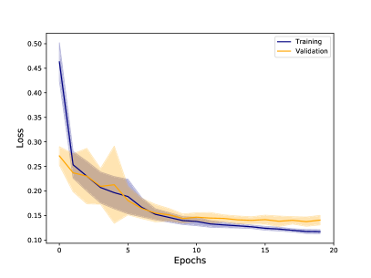
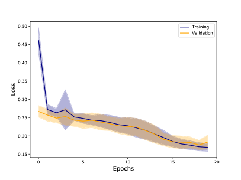
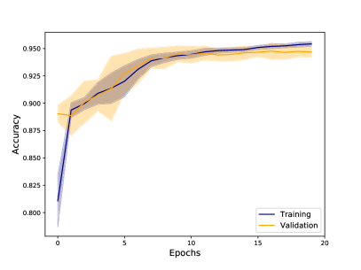
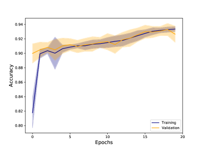
استخدمنا تحققًا متقاطعًا من 10 طيّات في تحليلنا بحيث يُستخدم، في كل طيّة، من البيانات للاختبار ويُقسَّم الباقي بنسبة بين التدريب والتحقق. ويُعرض العدد الإجمالي للعينات في كل مجموعة فرعية، لكل طيّة، في الجدول 2. دربنا النموذج على 20 حقبة لكل طيّة، باستخدام حجم دفعة قدره 128 ومحسّن Adam (Kingma and Ba, 2014). وكان زمن التدريب على GeForce 1080 هو دقيقة/20 حقبة للعينة المختزلة و دقيقة/20 حقبة للعينة الكاملة. ويُعرض متوسط الدقة والخسارة للعينات الفرعية للتدريب والتحقق في الشكل 6 للعينة المختزلة والكاملة، مع منطقة مظللة تقابل انحرافًا معياريًا واحدًا.
| Total samples | Train per fold | Validation per fold | Test per fold |
|---|---|---|---|
5 النتائج
نعرض هنا نتائج التصنيف للعينة الفرعية الاختبارية كما وُصفت في القسم 4. ومن الأدوات الرئيسية لتحليل أداء مصنِّف تعلّم آلي منحنى خاصية تشغيل المستقبل (ROC). ويعرض منحنى ROC نسبة الإيجابيات الحقيقية (TPR) ونسبة الإيجابيات الكاذبة (FPR) عند عتبات فصل مختلفة بين الفئات. وتُعرَّفان كما يأتي
| (3) |
حيث إن TP هي الإيجابيات الحقيقية (المتنبأ بها بصورة صحيحة كفئة موجبة)، وFP هي الإيجابيات الكاذبة (المتنبأ بها خطأً كفئة موجبة)، وTN هي السلبيات الحقيقية (المتنبأ بها بصورة صحيحة كفئة سالبة)، وFN هي السلبيات الكاذبة (المتنبأ بها خطأً كفئة سالبة). وفي هذا العمل نعدّ البلازارات الفئة الموجبة، لكن هذا الاختيار غير جوهري وكان يمكن اختيار العكس بالنتائج نفسها.
تقيس المساحة تحت منحنى ROC (AUC) درجة قابلية الفصل لنموذج معيّن: كلما زادت AUC كان النموذج أفضل في التمييز بين الفئات. وسيكون للمصنِّف المثالي AUC مقدارها 1 لأنه لا يقدم أي تنبؤات خاطئة، ومن ثم فإن دائمًا. وهذا يعني أن المصنِّف الجيد سيجعل TPR تزداد سريعًا مع إبقاء FPR منخفضة، مما يجعل منحنى ROC شديد الانحدار قرب الأصل.
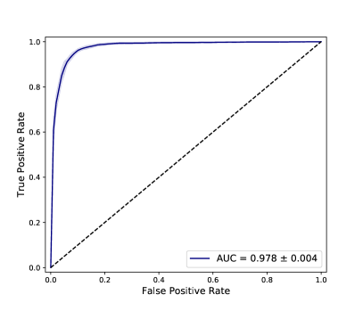
تُعرض منحنيات ROC المتوسطة للمجموعتين مع بيانات أشعة ومن دونها في الشكل 7. وقد حققت الشبكة أداءً مشابهًا في الحالتين، واستطاعت تصنيف المصادر بنتائج متقاربة بالاعتماد فقط على الجزء منخفض الطاقة من توزيع الطاقة الطيفية، على الرغم من أن كمية البيانات تنخفض بأكثر من . ويُرجَّح أن غياب تدهور قدرة الشبكة في غياب بيانات أشعة غاما يعود إلى الارتباط بين حدبتي السنخروترون وكومبتون العكسي في توزيع الطاقة الطيفية. وفي كلتا الحالتين، حققت الشبكة نتيجة جيدة على نحو لافت في مجموعات الاختبار مع تباين ضئيل بين الطيّات، مما يُظهر متانة النموذج عند استخدامه مع بيانات غير مرئية سابقًا.
أداة أخرى لتحليل أداء النموذج هي منحنى الدقة-الاستدعاء (PR)، حيث يكون الاستدعاء مساويًا لـ TPR و
| (4) |
بديهيًا، يمكن النظر إلى الدقة على أنها قدرة الشبكة على عدم إساءة تصنيف غير البلازار (البلازار) على أنه بلازار (غير بلازار)، في حين يمثل الاستدعاء قدرة الشبكة على تحديد جميع عينات البلازارات (غير البلازارات). وكما في ROC، يُبنى منحنى PR بأخذ قيم الدقة والاستدعاء عند عتبات فصل مختلفة بين الفئات. غير أن هناك هنا مفاضلة بينهما: فإذا غيرنا العتبة لزيادة الاستدعاء بتخفيض عدد السلبيات الكاذبة، فسيؤدي ذلك تلقائيًا إلى زيادة عدد الإيجابيات الكاذبة، مما يخفض الدقة. وتعكس AUC لمنحنى PR متوسط الدقة عند قيم مختلفة للاستدعاء، وكما في ROC، كلما زادت كان ذلك أفضل.
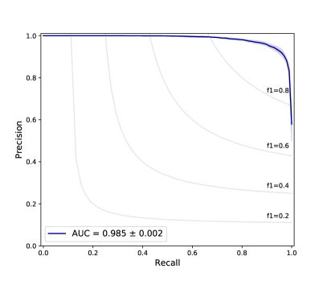
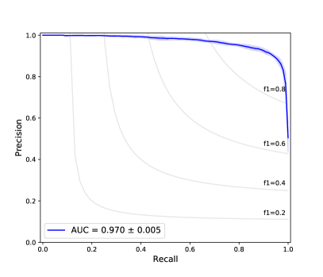
يُعرض منحنى PR المتوسط لكلتا مجموعتي البيانات في الشكل 8، مع خطوط لقيمة F1 ثابتة (المتوسط التوافقي بين الدقة والاستدعاء). ويشبه أداء الشبكة في الحالتين ما ظهر في منحنيات ROC، بنتائج مُرضية وتباين ضئيل مرة أخرى بين الطيّات.
| Non-Blazar | Blazar | |
|---|---|---|
| Non-Blazar | 94.4% 0.9% | 5.6% 0.9% |
| Blazar | 4.6% 0.8% | 95.4% 0.8% |
| Non-Blazar | Blazar | |
|---|---|---|
| Non-Blazar | 92.5% 0.7% | 7.5% 0.7% |
| Blazar | 6.0% 0.6% | 94.0% 0.6% |
بوصفه مقياسًا أخيرًا لتقييم أداء النموذج، نعرض مصفوفة الالتباس المتوسطة للمجموعتين مع بيانات الطاقة العالية ومن دونها في الجدول 3. هنا تقابل التسميات الأفقية الفئات الحقيقية، في حين تقابل التسميات الرأسية تنبؤات النموذج. ولتحديد الفئة المتنبأ بها بوصفها خرج الشبكة، يجب أولًا تحديد عتبة فصل بين الفئات. وقد اخترنا القيمة المثلى على أنها القيمة المقابلة للنقطة في منحنى ROC الأقرب إلى النقطة ، أي العتبة التي يكون عندها منحنى ROC للنموذج أقرب ما يمكن إلى منحنى ROC لمصنِّف مثالي (لأنه سيكون دائمًا على صواب، تكون FPR صفرًا بينما تكون TPR واحدًا دائمًا).
تُظهر مصفوفتا الالتباس هنا نسبة البلازارات/غير البلازارات التي تنبأ النموذج بأنها تنتمي إلى كل فئة. فعلى سبيل المثال، عند النظر إلى المجموعة التي تحتوي على بيانات أشعة ، تنبأ نموذجنا بصورة صحيحة بـ من غير البلازارات، في حين أُسيء تصنيف منها على أنها بلازارات. وفي المجموعة التي لا تحتوي على بيانات أشعة ، تنبأت الشبكة بصورة صحيحة بـ من غير البلازارات وأساءت تصنيف منها.
تُظهر النتائج أعلاه أن أداء الشبكة كان ممتازًا في كلتا مجموعتي البيانات، مع فرق ضئيل بينهما. وبالنظر إلى أن بيانات أشعة أكثر ندرة وعادةً ما يكون الحصول عليها أكثر تحديًا، فإن أداة تستطيع تحديد البلازارات بموثوقية باستخدام الجزء منخفض الطاقة فقط من توزيعات الطاقة الطيفية ستكون مفيدة للغاية في بناء الفهارس والبحث عن البلازارات عمومًا.
يمكن أن تقدم المصادر التي أُسيء تصنيفها (الإيجابيات الكاذبة والسلبيات الكاذبة) بعض الدلائل على حدود النموذج، وربما ترجمة ذلك إلى خصائص فيزيائية. غير أن تحليلًا بصريًا لتوزيعات الطاقة الطيفية تلك في كل طيّة لم يُظهر أي شيء مميز بشأنها. والعدد النسبي للإيجابيات والسلبيات الكاذبة في كل طيّة صغير، لذلك قد لا يكون هذا التحليل ذا دلالة.
6 تحليل التدرجات
تُظهر النتائج المعروضة في القسم 5 أن شبكتنا استطاعت تصنيف البلازارات بنجاح من بين النوى المجرية النشطة الأخرى. وعلى مستوى أساسي، تعمل الشبكات العصبية بمحاولة إيجاد أنماط في فضاء متعدد الأبعاد. وبما أن التصنيف كان ناجحًا، يمكن محاولة استخراج جزء من هذه الأنماط على الأقل، وربما المساعدة في فهم الفيزياء الكامنة وراء البلازارات.
تتمثل إحدى طرائق استخراج معنى فيزيائي من التصنيف في تحليل السمات التي كانت أكثر أهمية للشبكة عند تصنيف مصدر على أنه بلازار أو غير بلازار. ويمكن فعل ذلك بحساب تدرجات الطبقة النهائية في شبكة مدربة بالنسبة إلى المدخلات: فالقيم الأكبر تعني أن الأوزان ستتغير أكثر أثناء الانتشار العكسي، وكما يُرى من المعادلة 1، فإن العصبونات ذات الأوزان الأكبر ستؤثر في النتيجة النهائية أكثر. ومن ثم، كلما زادت القيمة المطلقة لتدرج سمة ما، زادت الأهمية التي أعطتها لها الشبكة عند إجراء التصنيف. وبما أننا نغذي الشبكة لكل توزيع طاقة طيفية بالترتيب نفسه للترددات، يمكننا استخدام هذه التدرجات لرسم خريطة لأهمية كل تردد، في محاولة لربط ذلك بفهم فيزيائي أعمق.
حُسبت التدرجات باستخدام الشبكات الأربع من التحقق المتقاطع K-fold التي حققت أدنى خسائر تحقق، وذلك لاختبار متانة النتائج. وتُحسب الأهمية النسبية التي تمنحها الشبكة لكل تردد من خلال التدرجات: فلكل توزيع طاقة طيفية، نطبّع التدرجات، ثم تُجمع للحصول على نسبة الأهمية الإجمالية التي منحتها الشبكة لكل تردد. يبيّن الشكل 9 هذه النسبة والاكتمال عند كل تردد، لكل من البلازارات وغير البلازارات. وقد عرّفنا الاكتمال بأنه كسر المصادر التي لها رصد مؤكد واحد على الأقل (من دون أخذ الحدود العليا) عند أي تردد معيّن.
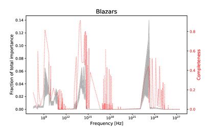
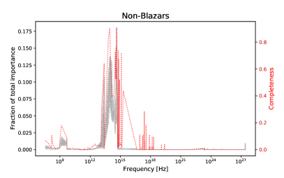
يتمثل جانب مهم في أن المناطق التي تكون فيها مجموعة البيانات أكثر اكتمالًا لا ترتبط جيدًا بالمناطق ذات الأهمية الأكبر. ويتضح ذلك خصوصًا في منطقة الأشعة السينية، حيث توجد بعض الترددات ذات اكتمال جيد لكن الشبكة تجاهلتها. ويشير هذا إلى وجود عوامل أخرى تؤثر إلى جانب توافر البيانات أثناء تدريب الشبكة؛ وربما تكون الشبكة قد تعلمت شيئًا يمكننا ترجمته إلى خصائص فيزيائية للنوى المجرية النشطة.
كانت منطقة أشعة مهمة عند تصنيف البلازارات، لكنها أُهملت إلى حد كبير بالنسبة إلى النوى المجرية النشطة الأخرى. فالبلازارات هي المصدر المهيمن في السماء عالية الطاقة خارج المجرية، وينعكس ذلك في مجموعة بياناتنا من خلال الفرق الكبير في عدد الأرصاد في هذه المنطقة الطيفية بين الفئات المختلفة (انظر الشكلين 2 و 3)، مما يجعل احتمال أن يكون مصدر يملك بيانات أشعة بلازارًا عاليًا جدًا.
بالانتقال إلى طاقات أدنى، نرى أن منطقة الأشعة السينية لم تكن مهمة، رغم امتلاكها اكتمالًا جيدًا في عدة ترددات. وبما أن تردد ذروة السنخروترون في البلازارات يمكن أن يتغير بعدة رتب مقدار، فقد يكون توزيع الطاقة الطيفية في الأشعة السينية متزايدًا أو متناقصًا أو مسطحًا، اعتمادًا على صنف المصدر. وفي حالة غير البلازارات، يكون توزيع الطاقة الطيفية عادةً مهيمنًا عليه بانبعاث حراري من التنامي؛ غير أن الانبعاث في الأشعة السينية يمكن أن يكون حراريًا حتى في البلازارات، ولا سيما في الحالات الهادئة أو في المصادر التي يكون فيها تردد ذروة السنخروترون منخفضًا. وعلاوة على ذلك، تُظهر منطقة الأشعة السينية تغيرية كبيرة جدًا، ومع أننا انتقينا منهجيًا أعلى قيمة تدفق عند كل تردد لتخفيف هذا الأثر، فقد تسهم مع ذلك في الالتباس العام بين الفئتين في هذه المنطقة. ويمكن أن تفسر هذه الآثار مجتمعةً الأهمية الضئيلة للأشعة السينية في التصنيف.
كانت منطقة الأشعة تحت الحمراء مهمة بدرجة ملحوظة للتصنيف في كلتا الفئتين؛ ففي غير البلازارات (وبخاصة الراديوية الهدوء)، يأتي معظم الانبعاث تحت الأحمر من غبار حراري، مما يسبب حدبة صغيرة في توزيع الطاقة الطيفية (ما يسمى حدبة IR)، في حين تهيمن في البلازارات (ومعظم النوى المجرية النشطة راديوية السطوع) أشعة السنخروترون غير الحرارية على الأشعة تحت الحمراء.
وعند أدنى الطاقات، يكون الانبعاث الراديوي مهمًا إلى حد ما عند تصنيف البلازارات، ويلعب دورًا صغيرًا في غير البلازارات. وبما أن مجموعة بياناتنا تحتوي على عدد جيد من الأجسام الراديوية الهدوء، فمن الطبيعي توقع أن يكون الانبعاث الراديوي إحدى الخصائص الأساسية المستخدمة لتحديد البلازارات؛ غير أن عينة غير البلازارات لدينا ما زالت تحتوي على عدد معتبر من النوى المجرية النشطة راديوية السطوع، ولذلك لا يمكن إجراء التصنيف اعتمادًا على الانبعاث الراديوي وحده.
ولمحاولة ربط التدرجات بالخصائص الفيزيائية للانبعاث، نظرنا إلى أهم 20 ترددات لكلتا الفئتين، في جميع الشبكات الأربع؛ ومن بينها عشرة مشتركة بين البلازارات وغير البلازارات في مناطق الراديو والأشعة تحت الحمراء والبصري. وباستخدام هذه الترددات، حاولنا بناء معلمات تُظهر على الأقل درجة من التمايز بين الفئات. ومن أكثر المعلمات شيوعًا في انتقاء توزيعات الطاقة الطيفية للبلازارات الميل بين ترددات مختلفة،
| (5) |
حيث إن هو التدفق و هو التردد.
أبسط طريقة لاختيار مصادر راديوية السطوع هي من الطيف الراديوي؛ إذ تمتلك هذه الأجسام ميلًا أكثر تسطحًا من الأجسام الراديوية الهدوء. غير أن البلازارات ليست الفئة الوحيدة راديوية السطوع، لذلك لا يكفي هذا النهج البسيط عادةً لتمييز البلازارات من النوى المجرية النشطة غير البلازارية. وتستخدم مناهج أخرى المستوى الذي تحدده ألوان القمر الصناعي تحت الأحمر WISE، حيث تقع البلازارات الباعثة لأشعة في منطقة محددة (Massaro et al., 2012; D’Abrusco et al., 2013b). ويمكن تحسين هذه الطريقة أكثر باستخدام ميول الراديو-تحت الأحمر وتحت الأحمر-الأشعة السينية أيضًا (Arsioli et al., 2015; Chang et al., 2017)، أو ما يسمى المعلمة q (D’Abrusco et al., 2014)، المعرّفة كما يأتي
| Frequency (Hz) | Observer |
|---|---|
| NVSS, FIRST, NORTH20 | |
| NORTH20 | |
| WISE W1 | |
| 2MASS Ks | |
| 2MASS H | |
| 2MASS J | |
| PANSTARRS y | |
| SDSS | |
| PANSTARRS z | |
| PANSTARRS i |
باستخدام أهم الترددات كما حددتها الشبكة (والمذكورة في الجدول 4)، حللنا ما إذا كان أي تركيب يستطيع فصل الفئات. وبما أن منطقة الأشعة السينية غير مهمة للتصنيف، فلا يمكن مقارنتها بالمعلمات القياسية لانتقاء البلازارات (مثل مستوى لـ HBLs، وتدفق الأشعة السينية). ومع الترددات العشرة المذكورة أعلاه، يكون العدد الإجمالي لتراكيب معلمتين أو أكثر المتاحة كبيرًا جدًا، لذلك لم يكن بحثنا شاملًا؛ وركزنا أساسًا على المعلمات المذكورة أعلاه وعلى عدد قليل غيرها. وكما هو متوقع، يوفر الميل في الراديو قدرًا من الفصل بسبب المصادر الراديوية الهدوء في مجموعة بياناتنا. ومع ذلك، لم يوفر أي تركيب من المعلمات الأخرى فصلًا بجودة لا تقل عن الميل الراديوي. ونعرض ثلاثة تراكيب في الشكل 10: أحدها مع الميل الراديوي، وثانيها مع نسخة من المعلمة q باستخدام التدفق في نطاق W1 عند m و1.4 GHz، والأخير باستخدام ألوان 2MASS.
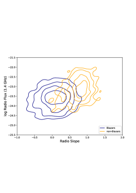
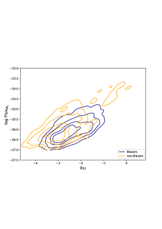
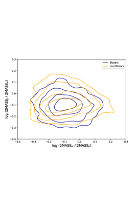
على الرغم من أن التحليل لم يستنفد فضاء المعلمات كله، فإن عدم قدرة أي تركيب من التدفقات أو الميول أو الألوان على فصل البلازارات من غير البلازارات يؤكد صلاحية نهجنا القائم على التعلّم العميق، حيث استطاعت الشبكة العصبية استخدام أكثر من تسعة ملايين معلمة لتعلّم التمييز بين الفئتين اعتمادًا على توزيع الطاقة الطيفية وحده.
7 المناقشة والملاحظات الختامية
7.1 ملخص
قدمنا في هذه الورقة نموذج تعلّم عميق قادرًا على تصنيف البلازارات من بين النوى المجرية النشطة الأخرى بالاعتماد فقط على توزيعات الطاقة الطيفية متعددة الأطوال الموجية، محققًا أكثر من من ROC AUC.
ولتحقيق ذلك، جمعنا فهرسًا لتوزيعات الطاقة الطيفية للنوى المجرية النشطة باستخدام VOU-Blazars، وهي أداة عامة طُورت في سياق مبادرة Open Universe ومتاحة عبر بوابتها الإلكترونية. وقد تمكنا من الحصول على أكثر من 14,000 توزيع طاقة طيفية متعدد الأطوال الموجية، مما قد يجعلها أكمل عينة توزيعات طاقة طيفية قائمة على VO ببيانات متاحة علنًا. وهذه العينة غير متجانسة للغاية، إذ تمتد توزيعات الطاقة الطيفية فيها من بضع نقاط إلى قرابة عشرة آلاف، وهو تحدٍ لنماذج التعلّم العميق. ونطبق قدرًا قليلًا من المعالجة المسبقة على البيانات، بما يضمن أن يكون الدخل قريبًا قدر الإمكان من بيانات العالم الحقيقي، مما يجعل النموذج قابلًا للتطبيق في أوضاع متنوعة.
7.2 أهمية مخطط التصنيف المعروض وموثوقيته
يحتوي نموذجنا العميق على طبقة LSTM ثنائية الاتجاه للاستفادة من حقيقة أنه، على الرغم من احتمال انتقال قمم توزيع الطاقة الطيفية إلى ترددات (أو تدفقات) أدنى أو أعلى، فإن الشكل مزدوج الحدبة لتوزيع الطاقة الطيفية للبلازار يظل محفوظًا.
أُجري تحقق متقاطع من 10 طيّات، وأظهر النموذج أداءً مشابهًا في جميع الطيّات، في العينة المختزلة والعينة الكاملة. وحصلنا على متوسطات AUC لمنحنيي ROC والدقة-الاستدعاء في عينة اختبار عمياء تتجاوز في كلتا الحالتين، مع تباين ضئيل بين الطيّات. وتُظهر مصفوفات الالتباس أن الشبكة استطاعت تصنيف أكثر من من البلازارات تصنيفًا صحيحًا في كلتا العينتين. وتبيّن هذه النتائج متانة الشبكة وقدرتها على تعميم تدريبها حتى مع مجموعات بيانات شديدة التغاير.
اختبرنا متانة نموذجنا أكثر باستخدام أفقر توزيع طاقة طيفية بالعينة كمجموعة اختبار، مع الحفاظ تقريبًا على التوزيع نفسه للبلازارات/غير البلازارات كما في مجموعة البيانات الكاملة. وحتى في هذا السيناريو، كانت AUC لكل من ROC والدقة-الاستدعاء متوافقة مع نتائجنا ضمن سيغما واحدة (انظر الشكل 11).
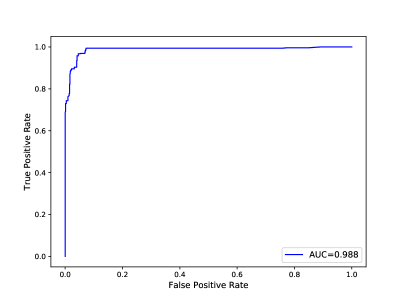
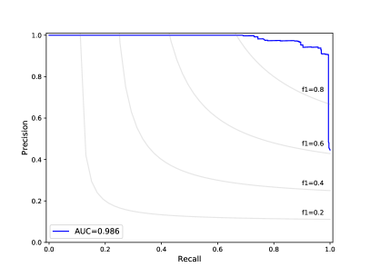
على الرغم من تغاير مجموعة بياناتنا فيما يتعلق بتوزيعات الطاقة الطيفية، فهي لا تتألف إلا من نوى مجرية نشطة. ومع ذلك، يُحتمل أن يظل أداء النموذج مُرضيًا حتى مع تضمين مصادر غير AGN، لأن توزيعات الطاقة الطيفية لها، في الغالبية العظمى، مختلفة بما يكفي عن توزيعات البلازارات.
7.3 تفسير التصنيف
يمكن محاولة إقامة صلة بين نتائج الشبكة وفيزياء النوى المجرية النشطة بتحليل تدرجات نموذج مدرب، وربط السمات الأكثر أهمية للتصنيف بالترددات في توزيع الطاقة الطيفية. وبذلك حددنا المناطق الطيفية الأهم لتصنيف مصدر ما إلى بلازار أو غير بلازار، مستعيدين نتائج معروفة من الأرصاد. ولم يتمكن بحث عن معلمات قادرة على فصل الفئات من إيجاد أي تركيب، باستخدام أهم عشرة ترددات لكل من البلازارات وغير البلازارات، مما يشير إلى أن الفصل متعدد المعلمات ويؤكد اختيارنا نموذج تعلّم عميق.
7.4 منظور التعلّم العميق
استُمدت الدقة العالية للنموذج الحالي باستخدام هذه البيانات المفتوحة المتاحة. غير أن عينات أخرى قد تمتلك تغطية مختلفة وقد تكون غير مكتملة بدرجة كبيرة عند عدة ترددات. وفي مثل هذه الحالات، قد يختلف أداء نموذج DL. ونحن ندرس حاليًا استخدام نماذج تستنتج بعدد عشوائي من الترددات وتكون مهيأة للعمل ببيانات قليلة لكل جسم.
7.5 التطبيق على Open Universe
نظرًا إلى أهمية البلازارات في الفيزياء الفلكية عالية الطاقة ومتعددة الرسل المعاصرة، من المهم جمع فهارس كبيرة وكاملة قدر الإمكان. يمكن للأداة المطوّرة في هذا العمل أن تسهم إسهامًا كبيرًا في هذا الهدف عبر إيجاد بلازارات جديدة في عينات كبيرة من مصادر الأشعة السينية التي تُظهر أيضًا انبعاثًا راديويًا. يغطي مسح السماء ROSAT (Voges et al., 1999) السماء كلها، لكن بحساسية ضحلة للأشعة السينية، وربما تكون كل البلازارات اللامعة ضمن هذه العينة قد حُدِّدت بالفعل. أما الفهرس العميق المثالي لهذا الغرض فسيكون ذلك الذي يولده مسح الأشعة السينية لكامل السماء SRG/eROSITA (Merloni et al., 2012, 2020)، الجاري حاليًا وسيصبح متاحًا علنًا في المدى المتوسط. وفي الوقت نفسه، فإن عينات الأشعة السينية الموجودة مثل OUSXG (Giommi et al., 2020b) و2SXPS (Evans et al., 2019) و4XMM-DR9 (Webb and al., 2020) وCSC2 (Evans et al., 2020) وXMMSL2 (Saxton et al., 2008)، التي تغطي مجتمعةً أكثر من نحو 20% من السماء بحساسيات تتراوح من أقل من 10-15 إلى بضعة أضعاف 10-13 erg cm-2 s-1، عميقة وواسعة بما يكفي لاكتشاف عدد كبير من البلازارات الجديدة. ويمكن تحديد هذه البلازارات مبدئيًا (واستخدامها دخلًا لأداتنا) بمطابقة مصادر الأشعة السينية تقاطعيًا مع فهارس واسعة المساحة للمصادر الراديوية، مثل NVSS (Condon et al., 1998)، بحساسية 2.5 mJy @ 1.4GHz، وVLASSQL ( 1 mJy @ 3GHz) (Gordon et al., 2020) وSUMSS21 ( 5 mJy @ 0.8GHz) (Manch et al., 2003). ويمكن الحصول على تقدير تقريبي لعدد البلازارات القابلة للكشف بهذه الطريقة من علاقة LogN-LogS الراديوية للبلازارات لدى Chang et al. (2021، قيد التقديم)، مع أخذ كثافات التدفق الراديوية التي تقابل، لأنواع مختلفة من البلازارات، تدفقات الأشعة السينية عند حد الحساسية النموذجي لفهارس الأشعة السينية المتاحة. وباعتبار تدفق عند 1 keV مقداره 5 erg cm-2 s-1(انظر الشكل 7 في Giommi et al., 2020a) حساسيةً نموذجية للأشعة السينية في الفهارس الموجودة الأعمق، فإن ذلك يقابل كثافة تدفق راديوية قدرها 30 mJy لـ FSRQs وLBL BL Lacs، و 15 mJy لمصادر IBL، و 1 mJy لأجسام HBL. وتبلغ الكثافات الفضائية المقابلة 3 و0.5 و0.3 مصدرًا لكل درجة مربعة، على الترتيب. وبالنسبة إلى مساحة سماء مغطاة قدرها 3,000 درجة مربعة (عند الحساسية المفترضة)، يعطي ذلك 9,000 من LBLs و1,500 من IBLs و900 من HBLs. أما عدد HBLs فهو في الواقع تقدير ناقص، لأن تدفق الأشعة السينية في هذه المصادر يمكن أن يكون أعلى بمرتبتين أو حتى ثلاث رتب مقدار من تدفق LBLs وIBLs عند الشدة الراديوية نفسها، ولذلك يمكن اكتشاف هذه المصادر أيضًا حيث تكون حساسية الأشعة السينية من رتبة erg cm-2 s-1 ، وهي مساحة أكبر بكثير من 3,000 درجة مربعة المذكورة أعلاه. ومع ذلك، ينبغي التعامل مع هذه الأرقام بحذر، لأن التغيرية الكبيرة التي تميز البلازارات والتقريبات من رتبة المقدار المستخدمة تجعل هذه الأرقام غير مؤكدة. وحتى في سيناريو محافظ، فإن عدد البلازارات الجديدة التي يمكن اكتشافها بهذه الطريقة أكبر بكثير من العدد المجمع للبلازارات المعروفة في فهارس 5BZCAT و3HSP و4LAC.
تطبيق آخر مثير للاهتمام لأداتنا هو تحديد مرشحي البلازارات العابرة، وهي أجسام لا تكون عادة قابلة للكشف في نطاقات الأشعة السينية أو أشعة غاما، لكنها مصادر راديوية ذات طيف مسطح تمتلك بيانات تحت حمراء مماثلة لبيانات بلازارات HBL، وتثور أحيانًا لتصبح مصادر HBL لامعة ذات تدفقات كبيرة في الأشعة السينية وانبعاث غاما قابل للكشف. وفي الوقت الراهن، لا تُعرف إلا حالة 4FGLJ1544.3-0649 (Sahakyan and Giommi, 2021)، وهو بلازار ارتفع لبضعة أشهر ليصبح أحد ألمع بلازارات الأشعة السينية المعروفة، لكن من الممكن أن تكون هذه الأجسام شائعة نسبيًا وأن تؤدي دورًا غير مهمل في ديموغرافيا البلازارات وربما في الفيزياء الفلكية متعددة الرسل.
توافر البيانات
حُصل على جميع توزيعات الطاقة الطيفية باستخدام أداة VOU-Blazars، المتاحة في بوابة Open Universe الإلكترونية. وجميع البيانات المسترجعة بها متاحة أيضًا علنًا، إما عبر VO أو Open Universe.
الشكر والتقدير
نود أن نشكر Luciana Dias على المساعدة في المراحل المبكرة من هذا العمل.
UBdA يقر بالحصول على منحة من Serrapilheira Institute رقم Serra - 1812.26906 وزمالة الباحث الشاب من FAPERJ رقم E-26/202.818/2019. كما يقر بالحصول على منحة إنتاجية بحثية من CNPq رقم 311997/2019-8.
PG يقر بدعم Technische Universität München - Institute for Advanced Studies، الممول من German Excellence Initiative (ومن برنامج الإطار السابع للاتحاد الأوروبي بموجب اتفاقية المنحة رقم 291763)، وبالدعم المقدم من Excellence Cluster ORIGINS، الممول من Deutsche Forschungsgemeinschaft (DFG, German Research Foundation) ضمن Germany’s Excellence Strategy -EXEC-2094 - 390783311.
استخدم المؤلفون آلات Sci-Mind متعددة GPU التي طُورت واختُبرت للذكاء الاصطناعي، ويودون شكر Marcelo P. Albuquerque وP. Russano وP. Souza Pereira على دعم البنية التحتية. كما استخدمت هذه الورقة مكتبة Plot Deep Design 55
5
https://github.com/cdebom/plot_deep_design لإعداد مخططات البنية المعروضة.
نقر باستخدام البيانات وأدوات التحليل والخدمات من منصة Open Universe، ونظام بيانات الفيزياء الفلكية (ADS)، وقاعدة البيانات الوطنية خارج المجرية (NED).
References
- The Spectral Energy Distribution of Fermi Bright Blazars. ApJ 716 (1), pp. 30–70. External Links: Document, 0912.2040 Cited by: §1.
- Fermi Large Area Telescope Fourth Source Catalog. ApJS 247 (1), pp. 33. External Links: Document, 1902.10045 Cited by: §1, §2.
- The Fourth Catalog of Active Galactic Nuclei Detected by the Fermi Large Area Telescope. ApJ 892 (2), pp. 105. External Links: Document Cited by: §1.
- 3FHL: The Third Catalog of Hard Fermi-LAT Sources. ApJS 232 (2), pp. 18. External Links: Document, 1702.00664 Cited by: §1.
- 1WHSP: An IR-based sample of ~1000 VHE -ray blazar candidates. A&A 579, pp. A34. External Links: Document, 1504.02801 Cited by: §6.
- A complete sample of LSP blazars fully described in -rays. New -ray detections and associations with Fermi-LAT. A&A 616, pp. A20. External Links: Document, 1804.03703 Cited by: §1.
- Machine Learning applied to Multifrequency Data in Astrophysics: Blazar Classification. arXiv e-prints, pp. arXiv:2005.03536. External Links: 2005.03536 Cited by: §1.
- Fermi Large Area Telescope Fourth Source Catalog Data Release 2. arXiv e-prints, pp. arXiv:2005.11208. External Links: 2005.11208 Cited by: §1, §2.
- Deep learning in wide-field surveys: fast analysis of strong lenses in ground-based cosmic experiments. arXiv preprint arXiv:1911.06341. Cited by: §3.
- A neural network gravitational arc finder based on the mediatrix filamentation method. Astronomy & Astrophysics 597, pp. A135. Cited by: §3.
- The 3HSP catalogue of extreme and high-synchrotron peaked blazars. A&A 632, pp. A77. External Links: Document, 1909.08279 Cited by: §2.
- 2WHSP: A multi-frequency selected catalogue of high energy and very high energy -ray blazars and blazar candidates. A&A 598, pp. A17. External Links: Document, 1609.05808 Cited by: §6.
- The Open Universe VOU-Blazars tool. Astronomy and Computing 30, pp. 100350. External Links: Document, 1909.11455 Cited by: §1, §2.
- Science with the Cherenkov Telescope Array. External Links: Document Cited by: §1.
- The NRAO VLA Sky Survey. AJ 115 (5), pp. 1693–1716. External Links: Document Cited by: §7.5.
- Unveiling the Nature of Unidentified Gamma-Ray Sources. I. A New Method for the Association of Gamma-Ray Blazars. ApJS 206 (2), pp. 12. External Links: Document, 1303.3002 Cited by: §1.
- Unveiling the Nature of Unidentified Gamma-Ray Sources. I. A New Method for the Association of Gamma-Ray Blazars. ApJS 206 (2), pp. 12. External Links: Document, 1303.3002 Cited by: §6.
- The WISE Blazar-like Radio-loud Sources: An All-sky Catalog of Candidate -ray Blazars. ApJS 215 (1), pp. 14. External Links: Document, 1410.0029 Cited by: §6.
- On the Physical Association of Fermi-LAT Blazars with Their Low-energy Counterparts. ApJS 248 (2), pp. 23. External Links: Document, 2004.11236 Cited by: §1, §1.
- Automatic detection of fractures and breakouts patterns in acoustic borehole image logs using fast-region convolutional neural networks. Journal of Petroleum Science and Engineering, pp. 107099. Cited by: §3.
- Rotation-invariant convolutional neural networks for galaxy morphology prediction. Monthly notices of the royal astronomical society 450 (2), pp. 1441–1459. Cited by: §3.
- The Chandra Source Catalog — A Billion X-ray Photons. In American Astronomical Society Meeting Abstracts, American Astronomical Society Meeting Abstracts, pp. 154.05. Cited by: §7.5.
- 2SXPS: An improved and expanded Swift X-ray telescope point source catalog. arXiv e-prints, pp. arXiv:1911.11710. External Links: 1911.11710 Cited by: §7.5.
- The Half Million Quasars (HMQ) Catalogue. Publ. Astron. Soc. Australia 32, pp. 10. External Links: 1502.06303, Document Cited by: §2.
- A unifying view of the spectral energy distributions of blazars. MNRAS 299 (2), pp. 433–448. External Links: Document, astro-ph/9804103 Cited by: §1.
- Radio to X-ray energy distribution of BL Lacertae objects.. A&AS 109, pp. 267–291. Cited by: §1.
- Open Universe for Blazars: a new generation of astronomical products based on 14 years of Swift-XRT data. A&A 631, pp. A116. External Links: Document, 1904.06043 Cited by: §2.
- Open Universe survey of Swift-XRT GRB fields: Flux-limited sample of HBL blazars. A&A 642, pp. A141. External Links: Document, 2003.05153 Cited by: §7.5.
- Open Universe survey of Swift-XRT GRB fields: Flux-limited sample of HBL blazars. A&A 642, pp. A141. External Links: Document, 2003.05153 Cited by: §7.5.
- Dissecting the regions around IceCube high-energy neutrinos: growing evidence for the blazar connection. MNRAS 497 (1), pp. 865–878. External Links: Document, 2001.09355 Cited by: §1.
- Deep learning. MIT Press. Note: http://www.deeplearningbook.org Cited by: §3.
- A Catalog of Very Large Array Sky Survey Epoch 1 Quick Look Components, Sources, and Host Identifications. Research Notes of the American Astronomical Society 4 (10), pp. 175. External Links: Document Cited by: §7.5.
- Speech recognition with deep recurrent neural networks. In 2013 IEEE international conference on acoustics, speech and signal processing, pp. 6645–6649. Cited by: §3.1.
- Gamma-ray active galactic nucleus type through machine-learning algorithms. MNRAS 428 (1), pp. 220–225. External Links: Document, 1209.4359 Cited by: §1.
- Fast automated analysis of strong gravitational lenses with convolutional neural networks. Nature 548, pp. 555–557. External Links: 1708.08842, Document Cited by: §3.
- Receptive fields, binocular interaction and functional architecture in the cat’s visual cortex. The Journal of physiology 160 (1), pp. 106. Cited by: §3.
- Neutrino emission from the direction of the blazar TXS 0506+056 prior to the IceCube-170922A alert. Science 361 (6398), pp. 147–151. External Links: Document, 1807.08794 Cited by: §1.
- Pedestrian detection in thermal images using adaptive fuzzy c-means clustering and convolutional neural networks. In 2015 14th IAPR International Conference on Machine Vision Applications (MVA), pp. 246–249. Cited by: §3.
- Evaluating the Classification of Fermi BCUs from the 4FGL Catalog Using Machine Learning. ApJ 887 (2), pp. 134. External Links: Document, 1911.02570 Cited by: §1.
- Classification of New X-Ray Counterparts for Fermi Unassociated Gamma-Ray Sources Using the Swift X-Ray Telescope. ApJ 887 (1), pp. 18. External Links: Document, 1910.06317 Cited by: §1.
- Star-galaxy classification using deep convolutional neural networks. Monthly Notices of the Royal Astronomical Society, pp. stw2672. Cited by: §3.
- Adam: A Method for Stochastic Optimization. arXiv e-prints, pp. arXiv:1412.6980. External Links: 1412.6980 Cited by: §4.
- Optimizing neural network techniques in classifying Fermi-LAT gamma-ray sources. MNRAS 490 (4), pp. 4770–4777. External Links: Document, 1911.02948 Cited by: §1.
- CMU DeepLens: deep learning for automatic image-based galaxy-galaxy strong lens finding. MNRAS 473, pp. 3895–3906. External Links: Document, 1703.02642 Cited by: §3.
- Deep learning. nature 521 (7553), pp. 436. Cited by: §3, §3.
- Uncertainties in parameters estimated with neural networks: application to strong gravitational lensing. The Astrophysical Journal Letters 850 (1), pp. L7. Cited by: §3.
- A deep convolutional neural network architecture for boosting image discrimination accuracy of rice species. Food and Bioprocess Technology 11 (4), pp. 765–773. Cited by: §3.
- MNRAS 342 (4), pp. 1117–1130. External Links: Document, 0303188, ISBN 9788578110796, ISSN 00358711 Cited by: §7.5.
- The 5th edition of the Roma-BZCAT. A short presentation. Ap&SS 357 (1), pp. 75. External Links: Document, 1502.07755 Cited by: §2.
- The WISE Gamma-Ray Strip Parameterization: The Nature of the Gamma-Ray Active Galactic Nuclei of Uncertain Type. ApJ 750 (2), pp. 138. External Links: Document, 1203.1330 Cited by: §6.
- Recurrent neural networks: design and applications. CRC press. Cited by: §3.1.
- eROSITA Science Book: Mapping the Structure of the Energetic Universe. arXiv e-prints, pp. arXiv:1209.3114. External Links: 1209.3114 Cited by: §7.5.
- eROSITA’s X-ray eyes on the Universe. Nature Astronomy 4, pp. 634–636. External Links: Document Cited by: §7.5.
- The Strong Gravitational Lens Finding Challenge. arXiv e-prints, pp. arXiv:1802.03609. External Links: 1802.03609 Cited by: §3.
- Analyzing interferometric observations of strong gravitational lenses with recurrent and convolutional neural networks. arXiv preprint arXiv:1808.00011. Cited by: §3.
- Blazar Flares as an Origin of High-energy Cosmic Neutrinos?. ApJ 865 (2), pp. 124. External Links: Document, 1807.04748 Cited by: §1.
- DASH: deep learning for the automated spectral classification of supernovae and their hosts. The Astrophysical Journal 885 (1), pp. 85. Cited by: §3.1.
- A call for deep-learning healthcare. Nature medicine 25 (1), pp. 14–15. Cited by: §3.
- Active galactic nuclei: what’s in a name?. A&ARv 25, pp. 2. External Links: 1707.07134, Document Cited by: §1.
- Dissecting the region around IceCube-170922A: the blazar TXS 0506+056 as the first cosmic neutrino source. MNRAS 480 (1), pp. 192–203. External Links: Document, 1807.04461 Cited by: §1.
- The connection between x-ray- and radio-selected BL Lacertae objects. ApJ 444, pp. 567–581. Cited by: §1.
- On the difficulty of training recurrent neural networks. In International conference on machine learning, pp. 1310–1318. Cited by: §3.1.
- Pelican: deep architecture for the light curve analysis. Astronomy & Astrophysics 627, pp. A21. Cited by: §3.1.
- The use of convolutional neural networks for modelling large optically-selected strong galaxy-lens samples. Monthly Notices of the Royal Astronomical Society 488 (1), pp. 991–1004. Cited by: §3.
- On the use of convolutional neural networks for robust classification of multiple fingerprint captures. International Journal of Intelligent Systems 33 (1), pp. 213–230. Cited by: §3.
- ImageNet Large Scale Visual Recognition Challenge. International Journal of Computer Vision (IJCV) 115 (3), pp. 211–252. External Links: Document Cited by: §3.
- The strange case of the transient HBL blazar 4FGL J1544.3-0649. MNRAS 502 (1), pp. 836–844. External Links: Document, 2011.10237 Cited by: §7.5.
- The first XMM-Newton slew survey catalogue: XMMSL1. A&A 480 (2), pp. 611–622. External Links: Document, 0801.3732, ISBN doi:10.1051/0004-6361:20079193, ISSN 0004-6361, Link Cited by: §7.5.
- Bidirectional recurrent neural networks. IEEE transactions on Signal Processing 45 (11), pp. 2673–2681. Cited by: §3.1.
- Review of artificial intelligence techniques in imaging data acquisition, segmentation and diagnosis for covid-19. IEEE reviews in biomedical engineering. Cited by: §3.
- Active Galactic Nuclei under the scrutiny of CTA. Astroparticle Physics 43, pp. 215–240. External Links: Document, 1304.3024 Cited by: §1.
- Generating text with recurrent neural networks. In ICML, Cited by: §3.1.
- An introduction to active galactic nuclei: Classification and unification. New Astron. Rev. 52 (6), pp. 227–239. External Links: Document Cited by: §1.
- A deep residual convolutional neural network for automatic lithological facies identification in brazilian pre-salt oilfield wellbore image logs. Journal of Petroleum Science and Engineering 179, pp. 474–503. Cited by: §3.
- Estimation of permeability and effective porosity logs using deep autoencoders in borehole image logs from the brazilian pre-salt carbonate. Journal of Petroleum Science and Engineering 170, pp. 315–330. Cited by: §3.
- The ROSAT all-sky survey bright source catalogue. A&A 349, pp. 389–405. External Links: astro-ph/9909315 Cited by: §7.5.
- The XMM serendipitous survey. A&A. Note: submitted Cited by: §7.5.
- Efficient Fermi source identification with machine learning methods. Astronomy and Computing 32, pp. 100387. External Links: Document, 2005.03546 Cited by: §1.
- A multi-model ensemble method based on convolutional neural networks for aircraft detection in large remote sensing images. Remote Sensing Letters 9 (1), pp. 11–20. Cited by: §3.
- Semantics-aware bert for language understanding. arXiv preprint arXiv:1909.02209. Cited by: §3.